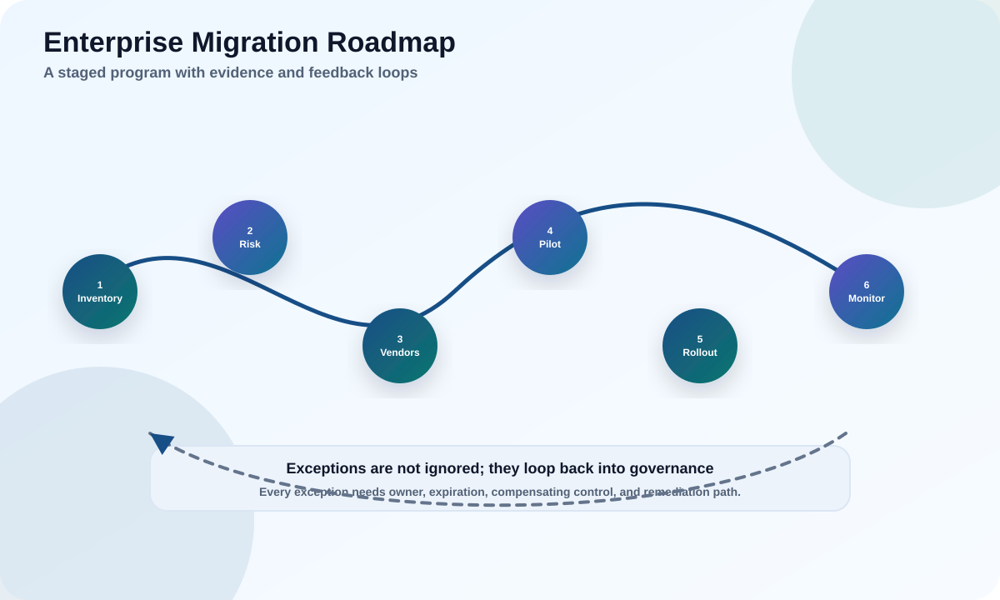

You are the newly appointed crypto-migration lead at a mid-size mobile operator. Over four decision points you will apply everything from PQC-001 through 601 to a single, realistic organization. Make the call, then compare.
Turn an inventory into a risk-tiered plan.
Pick algorithms and modes for each system.
Sequence waves and define the evidence of success.

The scenario: Northwind Telecom
Meet the estate you must make quantum-safe. Step through the systems in scope.
Before you decide anything, look at the whole estate on one page. Five systems, five very different cryptographic jobs, five different constraints. The instinct is to migrate the loudest system first; the discipline is to migrate the riskiest first — and "riskiest" almost never means "most visible."
Northwind's estate — five systems, five different jobs
Every module in this course pointed at reading an estate like this: identify the job, spot the public-key exposure, find the long-lived secrets, and never confuse the loud system with the risky one.
Your mission
Produce a defensible plan: inventory & triage, algorithm choices, wave sequence, and the evidence you will show the board. Work each decision below before revealing.
1
Decision 1 · Inventory & triage
You cannot migrate what you cannot see, and you cannot sequence what you have not scored.
The temptation is to start coding on the most visible system. Resist it. The first month of any real migration is inventory and triage: build the CBOM (PQC-402), then rank by harvest-now-decrypt-later exposure — a function of how long the data must stay secret and how exposed the public-key crypto protecting it is. Plot difficulty on the other axis and the plan almost writes itself: do the high-risk / low-difficulty work first, and start the high-risk / high-difficulty work early precisely because it is slow.
Triage: risk vs difficulty decides the order
Top-left is your quick, high-value win (rewrap KMS keys, turn on hybrid TLS). Top-right is slow but urgent — field devices with immutable verifiers — so it must start in Wave 0 even though it finishes last.
You have four weeks before the first steering committee. Everyone wants "their" system migrated first.
What is your first deliverable, and how do you rank the five systems above?
Recommended answer First deliverable: a CBOM covering all five, with owners and data lifetimes. Triage by harvest-now-decrypt-later risk: Tier 1 = eSIM provisioning + KMS key-wrapping + core TLS/SUCI + public portal key exchange (long-lived, exposed, public-key). Highest-urgency-but-hardest = field devices with immutable verifiers (start the hardware/agility track now even though field fixes are slow). The AES-256 bulk data is not the risk — its RSA key-wrapping is.
2
Decision 2 · Choose algorithms and modes
For each Tier-1 system you must pick a family and mode now.
What do you choose for portal TLS, KMS key-wrapping, eSIM signatures, and the firmware verifier?
Recommended answer Portal TLS: hybrid X25519+ML-KEM key exchange (keep classical certs until PKI is ready). KMS: ML-KEM/hybrid key wrapping, then rewrap data keys (no bulk re-encryption). eSIM: ML-DSA where the eUICC can fit it, with parameter sets chosen for size/verify speed; stage the GSMA trust chain. Firmware: new hardware with a crypto-agile, PQC-capable (or dual) verifier — SLH-DSA is attractive for a long-lived root of trust. Store algorithm identifiers everywhere for agility.
3
Decision 3 · Sequence the waves
A migration is not a project with an end date — it is a set of overlapping waves, each with its own owner and proof.
The triage quadrant tells you order; waves tell you how they overlap. Wave 0 (inventory, governance, agility policy) never really stops. The quick, high-value work runs in Wave 1 while the slow, vendor-blocked and hardware-blocked tracks run in parallel underneath it — because if you wait for Wave 1 to finish before starting the firmware track, you have already lost years off an 8–12 year device lifetime.
Overlapping waves — slow tracks start early and run in parallel
Notice Waves 2 and 3 start almost as early as Wave 1 even though they finish much later — that is the whole point. The single uniform deadline leadership asked for would have hidden this reality.
Leadership wants a single "all done by next year" date.
How do you sequence realistically, and what do you tell leadership?
Recommended answer Reject the single date; propose waves. Wave 0: inventory + governance + agility policy for new hardware. Wave 1: hybrid TLS on portal and core SBA, KMS rewrap (quick, high-value). Wave 2: eSIM trust chain with SIM/device vendors. Wave 3: firmware dual-signing + agile bootloaders in new device SKUs. Wave 4: long tail, roaming partners, exceptions with expiry. Tell leadership: aggressive dates for Tier 1, refresh-cycle for Tier 2, a hardware/replacement track for immutable devices, and a dashboard instead of a fictitious uniform date.
4
Decision 4 · Prove it and govern it
Six months in, the board asks whether Northwind is really becoming quantum-safe.
What evidence do you present, and how do you handle the immutable-device fleet?
Recommended answer Present system metrics: CBOM coverage %, share of portal/core sessions negotiating a PQC group, KMS keys rewrapped, eSIM trust-chain readiness, new device SKUs shipping with agile verifiers, and open blockers with owners/dates. For immutable field devices: a documented, board-accepted exception with compensating controls (segmentation, monitoring, shorter data lifetimes) and a scheduled replacement program — residual risk owned, time-boxed, and re-reviewed. Evidence, not assertions; exceptions that expire, not permanent silence.
5
Decision 5 · The one-page board summary
Everything you decided has to fit on one page a non-technical board can act on. If it doesn't, it won't survive.
This is where PQC-601's readiness artifact meets reality. The board does not want algorithm names; it wants to know what is exposed, what you are doing, what it costs, who owns it, and what risk remains. Draft it in six lines — then reveal a model answer and compare.
The CEO gives you exactly one slide for the quarterly board pack. No jargon.
What six lines do you write?
Recommended answer (1) Exposure: customer data, subscriber identity, and long-term backups are protected by cryptography a future quantum computer could break; adversaries may be harvesting it now. (2) Plan: a multi-year, wave-based migration to standardized quantum-safe algorithms, starting with the highest-risk systems. (3) Progress: Tier-1 key-wrapping and web/traffic protection already moving to hybrid; inventory complete. (4) Cost/owners: funded within the security roadmap; named owner per wave. (5) Residual risk: a fleet of immutable field devices cannot be upgraded and is on a time-boxed replacement plan with compensating controls. (6) Ask: continued funding and a standing quarterly review. Plain language, honest residual risk, a named owner, and a date — that is a governed program, not a science project.
What you just did
You applied the entire course to one organization. Trace it back.
Readan estate by cryptographic job, not by product name (PQC-001–102)
Scoredharvest-now-decrypt-later risk to triage the plan (PQC-101, 402)
Chosehybrid + the right family per job (PQC-201, 301)
Sequencedoverlapping waves with slow tracks started early (PQC-202, 401)
Provedprogress with system metrics, not assertions (PQC-401, 601)
Governedthe residual risk with owned, expiring exceptions (PQC-601)
The one idea to keep
Post-quantum migration is not primarily a cryptography problem — it is an inventory, sequencing, and governance problem, powered by crypto-agility, that happens to involve new algorithms. Master that framing and you can lead one of these programs anywhere.
Final assessment
Ten questions spanning the whole course. Score 70%+ to complete the capstone.
Score: 0/0
Primary sources
Northwind Telecom is fictional. Anchor real plans in primary guidance.